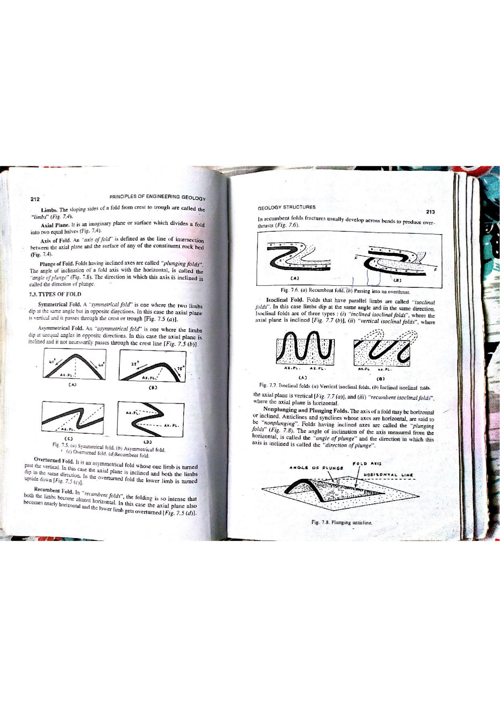

In structural geology, the 3D spatial attitude of a fold is fully specified by the geometric orientation of its axial surface and its fold axis (hinge line). The fold axis is defined as the line of intersection between the axial plane and a bedding surface, or the line which when moved parallel to itself generates the cylindrical fold surface.
When $\beta = 90^\circ$, the fold axis is vertical and the fold is classified as a vertical fold.

| Plunge of Hinge Line ($\beta$) | Designation | Dip of Axial Plane | Axial Plane Designation |
|---|---|---|---|
| $0^\circ$ | Horizontal (Non-plunging) | $90^\circ$ | Upright |
| $1^\circ - 10^\circ$ | Sub-horizontal | $80^\circ - 89^\circ$ | Sub-upright |
| $10^\circ - 30^\circ$ | Gently plunging | $60^\circ - 79^\circ$ | Steeply inclined |
| $30^\circ - 60^\circ$ | Moderately plunging | $30^\circ - 59^\circ$ | Moderately inclined |
| $60^\circ - 80^\circ$ | Steeply plunging | $10^\circ - 29^\circ$ | Gently inclined |
| $80^\circ - 89^\circ$ | Sub-vertical | $1^\circ - 9^\circ$ | Sub-horizontal |
| $90^\circ$ | Vertical | $0^\circ$ | Recumbent |
| Structural Feature | Non-Plunging Anticline | Plunging Anticline | Plunging Syncline |
|---|---|---|---|
| Axis Attitude | Horizontal ($\beta = 0^\circ$) | Inclined ($\beta > 0^\circ$) | Inclined ($\beta > 0^\circ$) |
| Outcrop Pattern on Map | Parallel linear bands | V-shaped or U-shaped nose | V-shaped or U-shaped nose |
| Nose Closure Direction | No closure (runs indefinitely) | V points in direction of plunge | V points opposite to plunge direction |
| Core Stratigraphy | Oldest rocks along central axis | Oldest rocks exposed inside nose | Youngest rocks exposed inside trough |